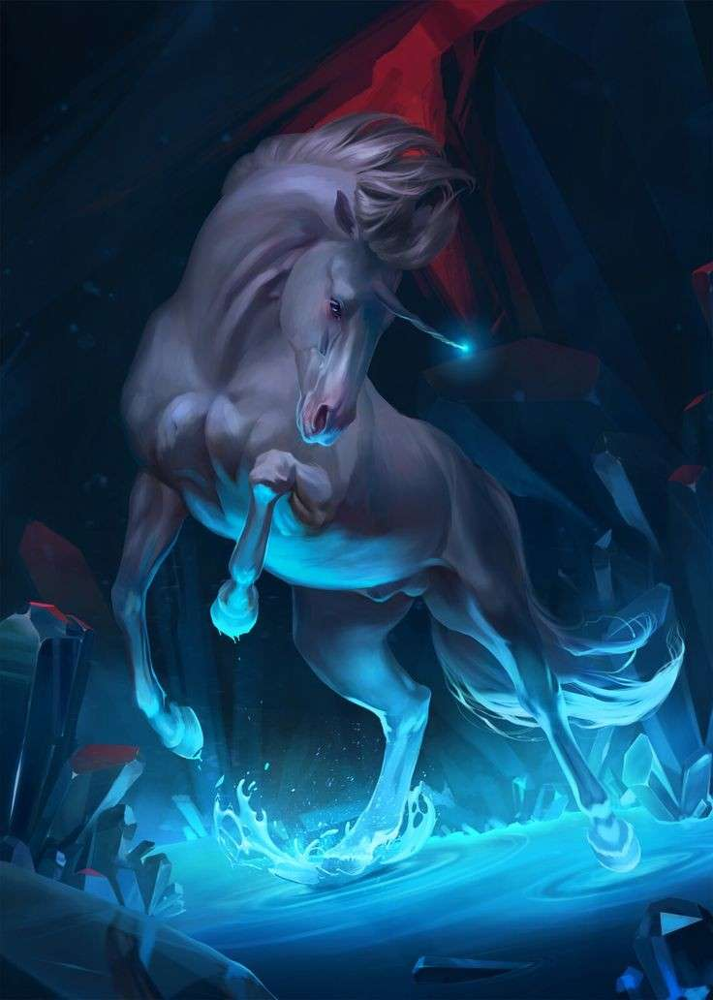
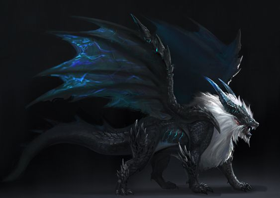

Force

Résistance

Dextérité
Magie

Ingénierie

Environnement : Ozaive - Thylathhils
Durée de vie moyenne : 300 ans
Taille : M
Système politique : Royauté encadrée par un conseil d'archimages
Statut politique : -
Relations hostiles : Peuples vénérant Ysiiri
Alliés : -
Croyance : Astra
Force
Résistance
Dextérité
Magie
Ingénierie
Capacités innées : Vue, ouïe et odorat surdéveloppés
Facilités magiques : Magie des arcanes, essences magiques tirée des astres
Impossibilités : Utilisation de technologie
Les elfes lunaires naquirent d'un mouvement de pensée politique, philosophique et religieux d'après guerre humano-elfique. Fervent croyant en la doctrine d'Astra, ils renient Ysiiri le jugeant comme imposteur, un seul soleil au milieu d'une multitude d'étoiles. Il n'avait rien créé des mouvements qui animent le ciel et n'avait pas porté assistance à ses sujets. Alors, ceux qui seront nommés elfes lunaires, firent s'élever l'Ozaive, une île flottante, et se protégèrent des regards hérétiques.
Profil type : Avide de savoir - Calme - Solitaire
Alimentation : Omnivore - Cueillette et chasse
Montures : Chevaux astraux - Créature draconienne de petite taille (réservée aux plus grands guerriers et au sang royal, elle provient d'un oeuf volé du nid et est élevée par son maître)
 Leur peau finira par perdre peu à peu de sa couleur, au profit d'une teinte bleue ou blanche qui les caractérise désormais. Le procédé par lequel ils créèrent leur pays eut emplis leurs terres de magie arcanique, les faisant briller dans ce domaine et permettant la création du conseil des archimages, hautement influant dans leur société. Si ce détachement manqua le début des animosités entre elfes sylvestres et elfes lunaires, cela ne contrarie en rien ces derniers, vivant à un rythme décalé par rapport aux autres peuples et n'ouvrant leurs frontières qu'à quelques diplomates et à ceux avides de savoir au sujet les flux magiques.
Nombre d'OC de cette race sur Yndrill: -